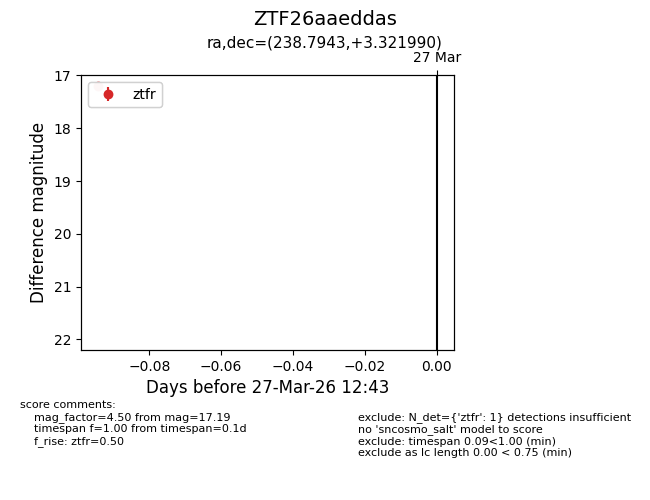
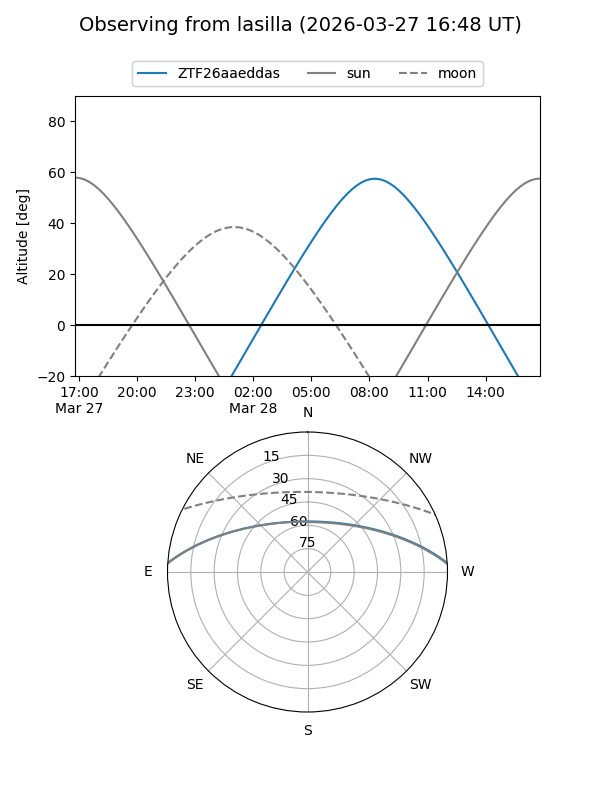
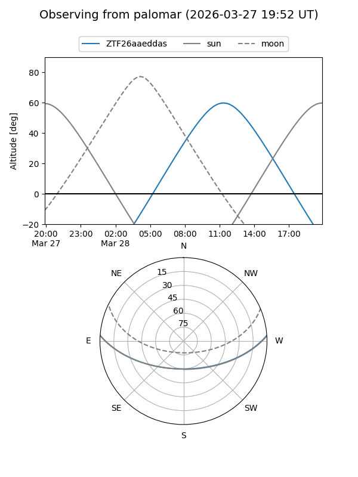

ZTF26aaeddas
Target ZTF26aaeddas at 2026-03-27 12:45
Aliases and brokers:
FINK: link
Lasair: link
ALeRCE: link
alt names
ZTF26aaeddas (ztf,fink_ztf)
Coordinates:
equatorial (ra, dec) = 238.7943,+3.32199
equatorial (HMS+DMS) = 15:55:10.64,+03:19:19.17
galactic (l, b) = (12.6553,+40.11680)
Flags:
Photometry:
last ztfr=17.19
1 ztfr detections
Lightcurve

Visibility


Additional plots